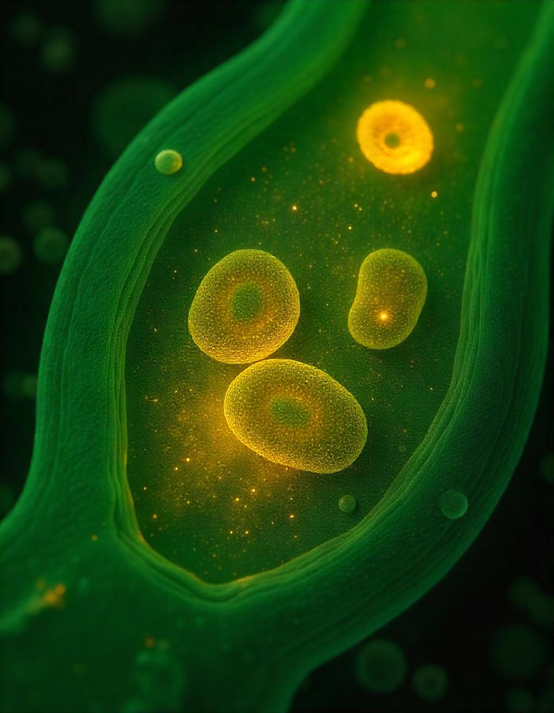
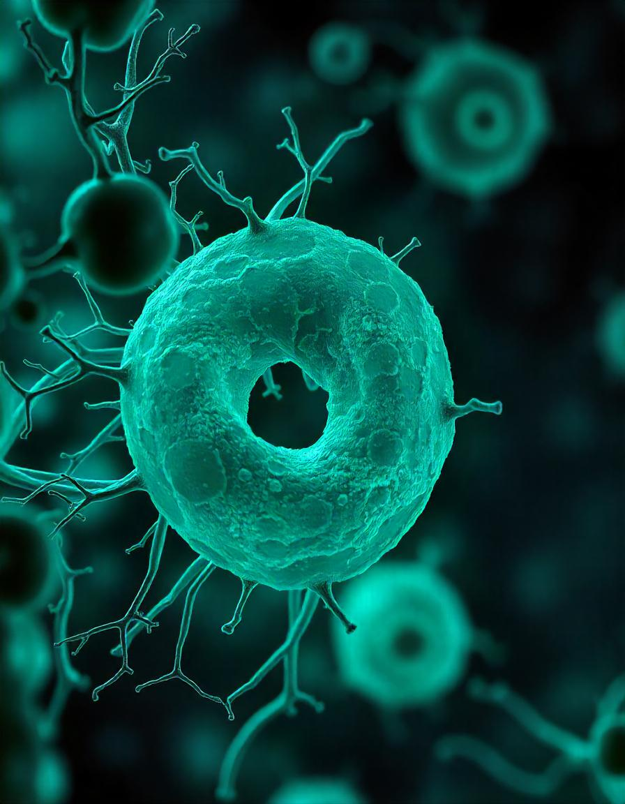

ORGANELAS



O QUE SÃO:
Organelas são estruturas internas da célula, comparáveis a "mini órgãos", que realizam funções essenciais como síntese de proteínas, digestão, armazenamento e produção de energia. Nas células eucariontes (animais e vegetais), são envolvidas por membranas e têm papéis específicos no metabolismo celular.
ORGANELAS EXISTENTES NAS CÉLULAS ANIMAIS E VEGETAIS:
| Organelas | Função |
|---|---|
| Núcleo | Controla as atividades celulares e armazena o material genético. |
| Mitocôndrias | Produzem ATP, a principal fonte de energia celular. |
| Ribossomos | Realizam a síntese de proteínas. |
| Retículo Endoplasmático | Dividido em rugoso (com ribossomos) e liso (sem ribossomos), participa na síntese de proteínas e lipídios. |
| Complexo de Golgi | Modifica e distribui proteínas e lipídios. |
| Lisossomos | Contêm enzimas digestivas para decomposição de resíduos. |
| Peroxissomos | Degradam substâncias tóxicas. |
| Citoesqueleto | Estrutura que dá forma à célula e facilita o transporte intracelular. |
| Vacuolos | Armazenam substâncias e regulam a pressão osmótica. |
SUAS FUNÇÕES:
| Organelas | Função |
|---|---|
| Retículo Endoplasmático Rugoso (RER) | Possui ribossomos e realiza síntese de proteínas. |
| Retículo Endoplasmático Liso (REL) | Envolvido na síntese de lipídios e desintoxicação celular. |
| Complexo de Golgi | Modifica, empacota e distribui proteínas e lipídios, formando lisossomos. |
| Lisossomos | Responsáveis pela digestão de resíduos celulares. |
| Peroxissomos | Quebram peróxido de hidrogênio em água e oxigênio. |
| Centríolos | Organizam os microtúbulos durante a divisão celular. |
| Vacuolos | Armazenam substâncias e controlam o volume celular e a pressão osmótica. |
| Plastídeos | Responsáveis pela fotossíntese nas células vegetais. |
| Mitocôndrias | Realizam a respiração celular e produção de ATP. |
Essas organelas trabalham em conjunto, mantendo as células vivas e garantindo que os processos necessários para a sobrevivência e o funcionamento celular ocorram adequadamente.